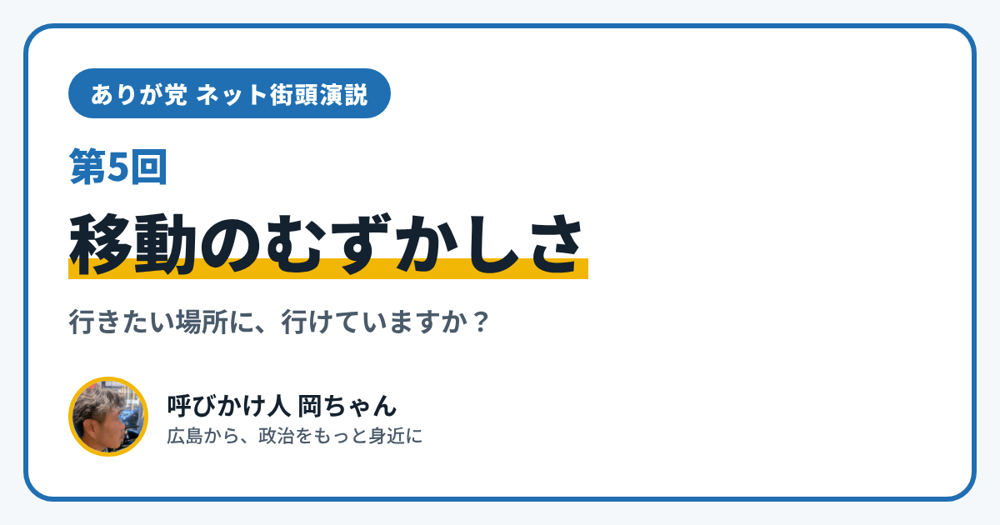

ありが党 ネット街頭演説 第5回｜移動のむずかしさ

こんにちは、ありが党の呼びかけ人、岡ちゃんです。今日のネット街頭演説のテーマは「移動のむずかしさ」です。
行きたい場所があるのに、行き方がわからなかったり、交通費が心配だったりして、あきらめたこと、ありませんか？ 電車やバスに乗るのが大変で、出かけるのがおっくうになっていませんか？
僕は電動車椅子で暮らしています。移動は、暮らしのすべてにつながる大切なことだと感じています。今日は、移動を助けるしくみを2つ紹介します。
障害者手帳で、JRの運賃が割引になります
1つめは、JRの運賃の割引です。
- 身体障害者手帳、療育手帳、精神障害者保健福祉手帳を見せると、乗車券などが5割引になります
- 2025年4月1日からは、精神障害者保健福祉手帳も割引の対象に加わりました
- 介護する人と一緒に乗るときは、介護する人も割引になる場合があります
- ひとりで乗るときは、片道100kmをこえる普通乗車券が対象です
使える切符は手帳の種類でちがうので、JRの窓口などで確かめてください。
NPOなどが送り迎えをする「福祉有償運送」
2つめは「福祉有償運送」です。電車やバス、タクシーをひとりで使うのがむずかしいお年寄りや障がいのある人のために、NPO法人や社会福祉法人などが、自分たちの車で送り迎えをするしくみです。国に登録して行われています。
利用するには、運営する団体の会員になる必要があります。料金は「もうけを出さない範囲」とされていて、広島市では、タクシーの上限の運賃のおおむね半分以下が目安とされています。
僕が大事にしたいこと
僕は、移動できることは、人に会えること、学べること、働けること、楽しめることにつながっていると思っています。障がいがあってもなくても、行きたい場所に行ける広島になってほしいと思っています。
あなたは、移動のことでどんなことに困っていますか？ 段差、乗りかえ、交通費、送り迎え、帰りの時間。小さなことでも大丈夫です。InstagramのDM（@ayu19841002）や、ありが党のページから、あなたの暮らしの声を聞かせてください。
ありが党は、まだ僕ひとりから始めたばかりです。政治をもっと身近にしたいと思う方、一緒に考えてくれる仲間を探しています。InstagramのDM（@ayu19841002）で気軽に声をかけてください。